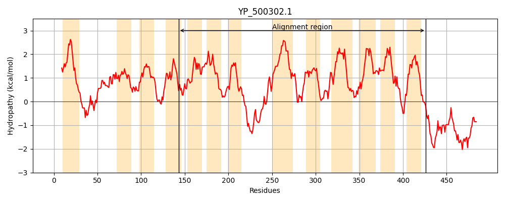
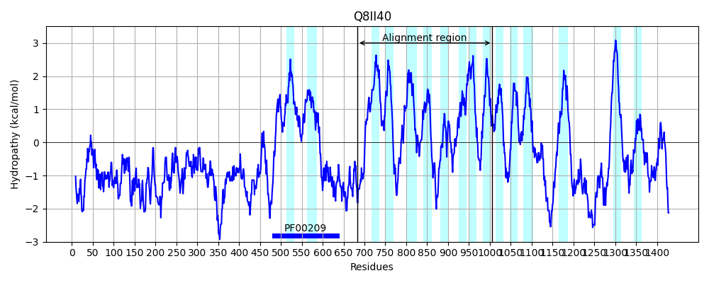
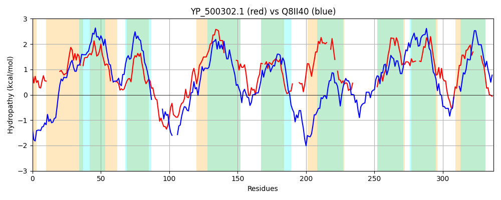

Hit Accession: Q8II40
Hit TCID: 2.A.22.7.1
Hit Description: gnl|BL_ORD_ID|16340 gnl|TC-DB|Q8II40|2.A.22.7.1 Amino acid transporter, putative OS=Plasmodium falciparum (isolate 3D7) OX=36329 GN=PF3D7_1132500 PE=4 SV=2
Mach Len: 337
e:0.000002
Query TMS Count : 13
Hit TMS Count: 16
TMS-Overlap Score: 4.400000
Predicted Substrates:CHEBI:33709;amino acid, CHEBI:16865;gamma-aminobutyric acid
BLAST Alignment:
Score: 118 , Bit scores: 50 bits, E-value: 2.2e-06, Alignment length: 337, Percentage identity: 22
Query: 143 INAIIYKEKQP---------VSVTVLFYVLCFFGQL-FMENVTLFHCIILILAFLYEF---TANRTLNYKLLFSFMIATIGTIIMFSNPNYRKILFEGSEYQQVSNNQGIFSKFAEMISTSLPYGVIFSQIIILSMIAALI--------IYLLLRSDRYVHLTILKRRI-IMIGFITLPLYYLLFYNQFLL----NKNTDIGLVGFVNVIVCGYFA--FSIF-VGIYLSINDRKT-----------------QITLYSLLIAICVSASTLVIVTPIEPGNF--LIVYTIHVIILIILLKEFRKYKSINVNFIKGASLVLAVIY-----LSAFIYVHY 426
+N +Y +K+ VS++ + +L F + F+ + I+++L FL + + N++L+Y L SF+I + +I++ E EY Q N+ + K+ I S Y + + +I+ +I ++ I + S + I+K+ I++G + + YL +Y +L N N + + + + YF ++I + I + ++K QI +Y L+++ + S ++ LI TIH+ ++II LKE RK++ IN K + + +IY L+ F + Y
Sbjct: 683 LNIFMYSKKREPVQNNSHSCVSISTMEIILFFTKNISFVWKILSLFVILILLYFLLKIETMSLNQSLHYILSISFIIVLLQILILYYK-------LEPKEYTQ---NENMAIKYNTCIFFSKEYFLHINFYLIIKIICLVLFSVNCSTGINYIFSSYTNIGDNIIKQSYYIILGSFIVTITYLTYYYLCILHIHNNNNNKNNINVYDDEYILNYFIDYYNILPINIAHIVQEKKNIIFSFLKNNVKYHYIPHQIIIYLLVLSKYIPFSNMMCFLYFLSSLLVLLITITIHIKVIIITLKECRKFRKINK---KKFIIYIIIIYFFASLLNIFFFTSY 1006 | Protein Hydropathy Plots: |
|---|
|  |  |
Pairwise Alignment-Hydropathy Plot:
|
|---|
|  |